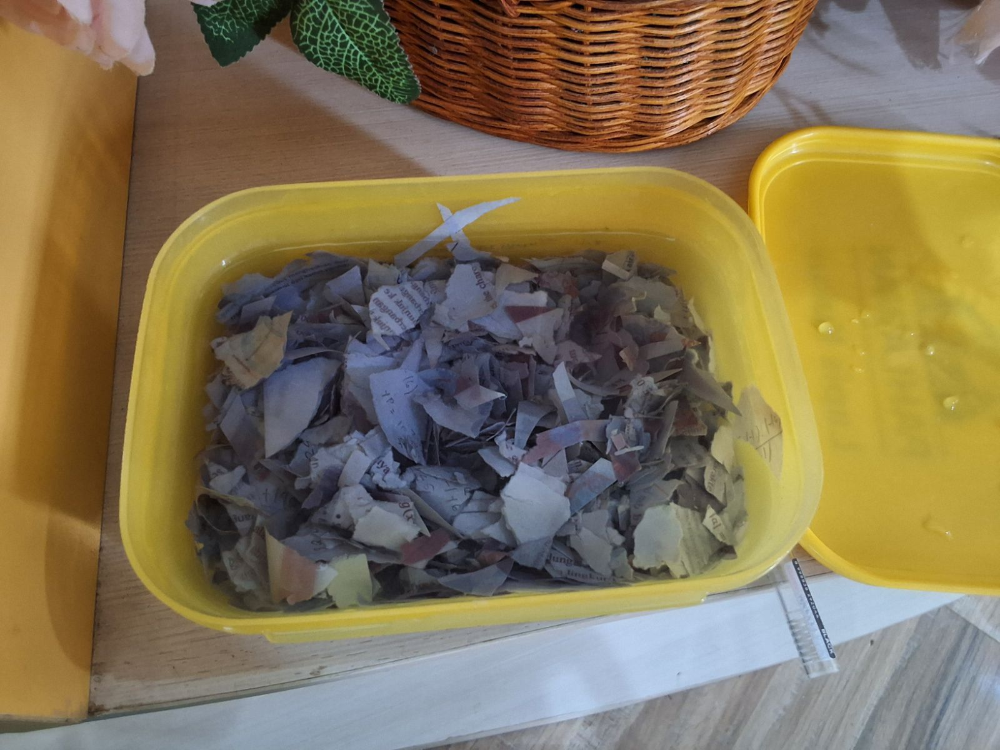
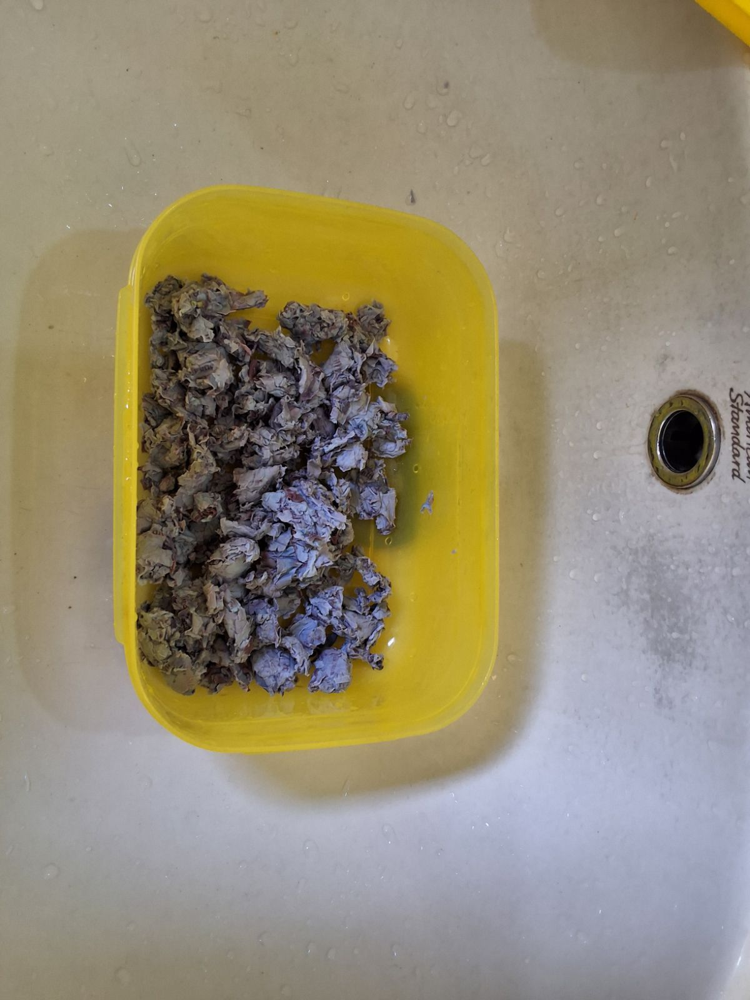

Penghancuran
Kertas yang sudah dikumpulkan akan dipisah sesuai kriteria warna:
- Putih
- Abu
- Ivory
- Coklat susu
- Warna selain di atas (diproses terpisah)
Lalu kertas tersebut dipotong menjadi potongan kecil-kecil untuk memudahkan proses selanjutnya.

Peleburan
Kertas yang telah dipotong kecil-kecil dimasukkan ke ember, lalu akan direndam air cuka dengan perbandingan:
- Air panas: 10 liter
- Cuka: 3 sendok makan
Didiamkan selama 12 jam. Kemudian kertas yang sudah didiamkan tersebut dibilas dengan air dingin sebanyak dua kali.
Lalu kertas lembek tersebut diblender dengan air bersih dengan rasio kertas : air = 1 : 3 hingga menjadi bubur dan tidak ada serat kasar kertas yang tersisa.

Pembentukan Kertas Lembaran
Dikarenakan output produk terdapat kertas dan aksesoris dari kertas, sehingga metode pembentukannya juga berbeda.
Untuk Kertas Lembaran:
- Bubur kertas dimasukkan ke dalam baskom dengan rasio 1 : 15 dan diaduk hingga rata
- Cetakan kertas dimasukkan ke dalam baskom dan diangkat secara perlahan dan horizontal
- Kertas yang sudah tercetak akan ditaruh di kain tahu yang lembab dan dijemur sampai kering

Pembentukan Aksesoris Kertas
Untuk Aksesoris Kertas:
- Bubur kertas akan disaring dengan kain tahu
- Lalu ditambahkan lem (perekat alami) sesuai kebutuhan
- Dibentuk sesuai yang diinginkan (bros, gantungan kunci, hiasan dinding, dll)
- Kemudian dijemur hingga mengeras

Finishing & Siap Pakai
Setelah melalui proses pengeringan sempurna, produk kertas dan aksesoris siap melalui tahap finishing:
- Pemotongan sesuai ukuran standar (untuk kertas)
- Pengamplasan tepian (untuk aksesoris)
- Quality control sebelum dikemas
- Pengemasan dengan bahan ramah lingkungan
Hasilnya? Kertas daur ulang berkualitas dan aksesoris unik yang siap menemani aktivitasmu sehari-hari! 🌿